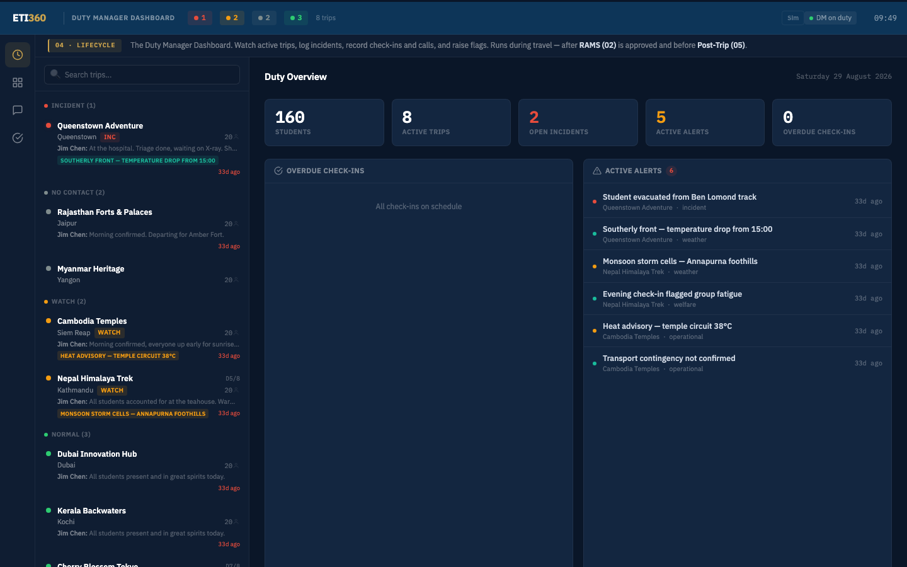
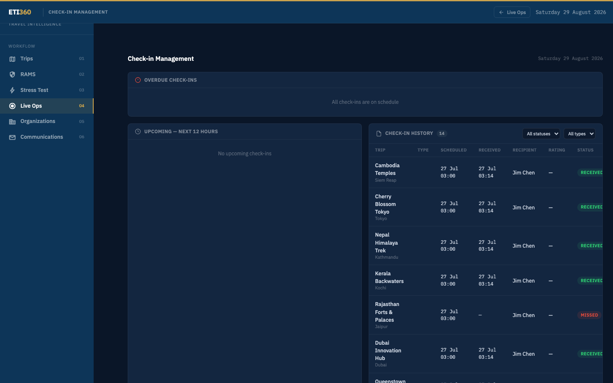
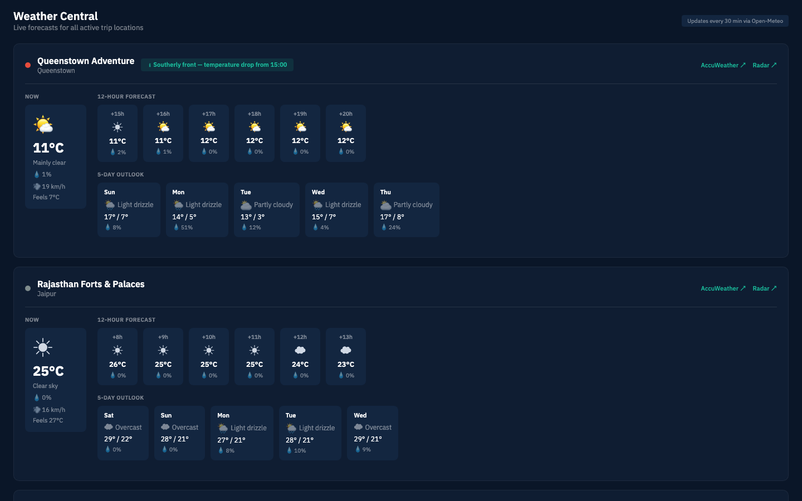
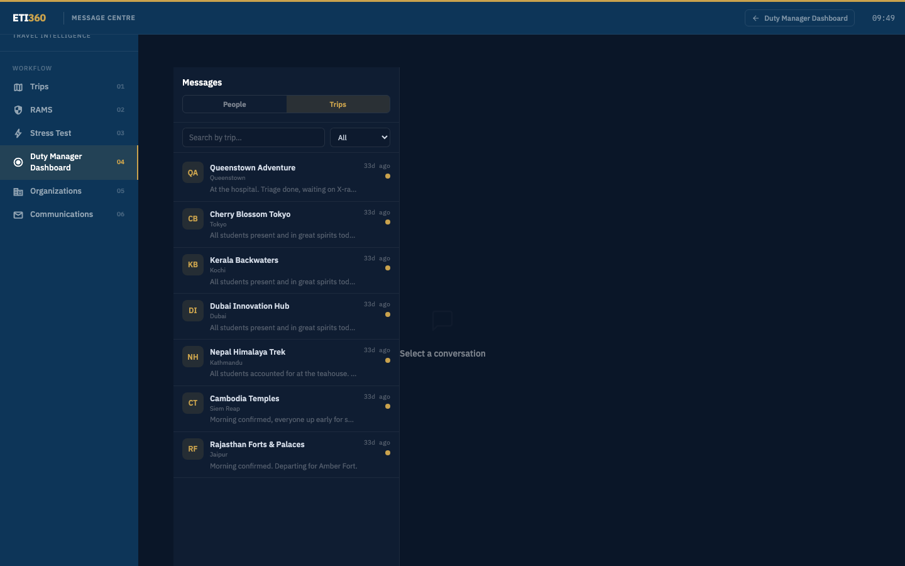
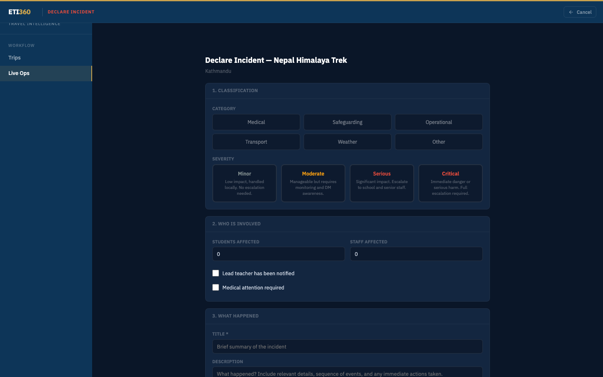
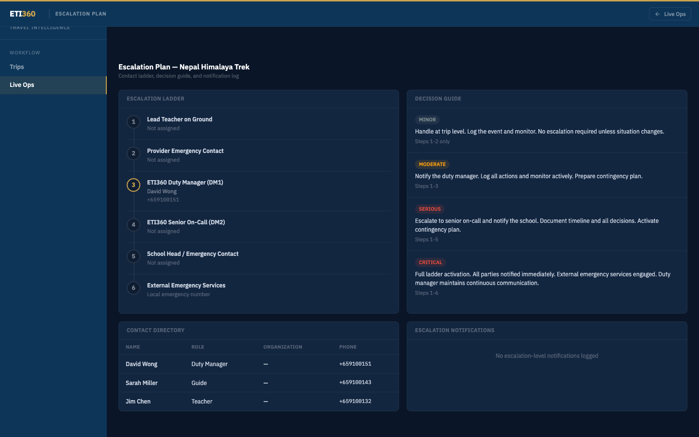
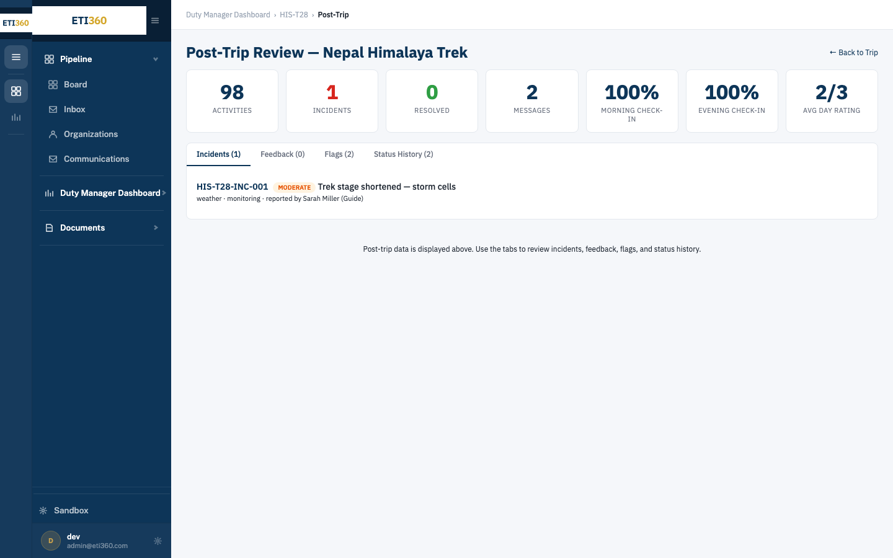
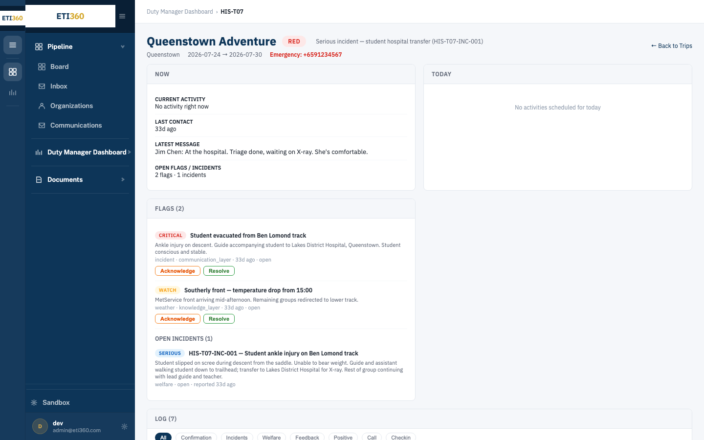

The Duty Manager Dashboard is where your current trips live while they travel: every group's state on one screen, check-ins and calls logged as they arrive, the forecast for the places the itinerary names, and the incident tools when something needs managing. It is deliberately minimal — if it isn't needed on duty, it isn't on the screen.
It runs during one specific stretch of a trip's life: from the point your school puts the trip into duty operations until the post-trip record closes. Everything it shows is built from the trip file — the day's schedule comes from the normalized itinerary, the facilities from the verified location record.
The dashboard is operated by your team: your duty manager, on your roster, following your school's procedures. ETI360 builds and maintains the surface and the trip file behind it — we are not a monitoring service. The dashboard holds the facts, communications, and actions your team records; the decisions stay in your school's process.
This guide is the duty manager's manual. The Duty Manager Simulation is where a duty manager practices everything in it on a realistic situation before holding a live shift.


How to read it
- The left column is a triage list, not a trip list. Trips sort into lanes by state — Incident, No contact, Watch, Normal — with the most demanding lane on top. Read top to bottom and you have the recorded state of every current trip; your school's procedure sets the order you work them in.
- Each trip card carries its last word: the most recent message from the field, any active alert, and how long since last contact. A trip in the Normal lane can be read without opening it.
- Duty Overview is the day's arithmetic: students traveling, active trips, open incidents, active alerts, overdue check-ins. It counts what is open; it is not a score.
- The top bar shows who's on duty and the lane counts — and the Sim toggle, which is how this same screen runs practice sessions (its own guide).
| Term | Definition |
|---|---|
| Duty manager | The person on your roster holding the shift right now — shown in the top bar |
| Lane | A trip's triage state: Normal · Watch · No contact · Incident |
| Check-in | A scheduled confirmation from the group in the field; overdue check-ins surface on the board |
| Flag | Something worth attention that isn't (yet) an incident — a weather front, a fatigue note. Flags are acknowledged and resolved |
| Incident | A situation you declare and manage, classified by category and severity (section 11) |
| Log | The trip's timestamped record: check-ins, calls, messages, and the actions your team records — written once, read at handover, post-trip, and beyond |
| Escalation | Bringing a named school contact into an incident, per your school's ladder |
| Handover | Passing the shift with the log as the record of where things stand |
Read down the lanes
Anything above Normal carries an open item. For each: what happened, what the last shift logged, what is still open.
Check the Duty Overview numbers
Open incidents and overdue check-ins are your inherited work; active alerts are your watch list.
Know each trip's day
Open each traveling trip once: today's schedule (from the itinerary) tells you when the higher-attention blocks come — the summit day, the water day, the long transfer.
Confirm you're reachable
The duty phone is the number the field and the escalation ladder use — per your school's procedures.
| Lane | Means | Use with your procedure |
|---|---|---|
| Normal | Check-ins on schedule, nothing open | No open item recorded |
| Watch | An open flag: weather building, a welfare note, an operational loose end | An open flag to read against today's schedule; your procedure decides the response |
| No contact | The group hasn't been heard from inside its expected window | Your school's contact procedure applies; record each attempt as you make it |
| Incident | A declared incident is open on the trip | An incident record is open — section 12 |
Lanes are driven by what's recorded — a resolved flag moves a trip back toward Normal; an unanswered window moves it to No contact. Keeping the record current is what keeps the board honest.
Trips confirm in on the windows your school and the provider set for them. A check-in that arrives by message logs itself against the window; one that comes by phone, you record. Either way the trip's "last contact" clock resets and the trip stays in Normal.

The overdue path: when a window passes unanswered, the trip moves to No contact and the Duty Overview counts it. What happens next is your school's procedure: it defines any grace period, who is contacted and in what order, and when the matter escalates. The dashboard's job is to make the clock visible and hold your record of each attempt; the decisions are yours.

The weather view presents the forecast for each trip's locations — not a generic city forecast, but the places the itinerary names today and tomorrow. When conditions cross a threshold, an alert lands on the trip: southerly front from 15:00 · monsoon cells in the foothills · 38°C on the temple circuit.

An alert is information for your judgment, not an instruction — what it changes is a conversation between you, the trip leader, and the plan. Record what follows on the trip: the alert, the call, the adjustment. That record shows the forecast was seen and acted on.
Messages run per trip, threaded between the field and the duty desk, each tagged with who sent it and in what role — teacher, duty manager. Calls you take get logged the same way, so the phone and the thread tell one story.

The thread survives handover. The next duty manager reads the exchange exactly as it happened, timestamped, next to the check-ins and flags it relates to — instead of asking whose phone the conversation is on.
The handover test: could someone who wasn't here run the next shift from the record alone? At the end of a shift the trip record can show:
- Every open flag and incident carries a current entry — what's been done, what's expected next, by when
- Anything you promised the field ("call when you reach the hospital") is logged so the next shift knows to expect it
- Anything the next shift needs is in the log rather than on a personal phone
The incoming duty manager starts at section 4, and the two routines meet in the middle: your closing entries are their opening read.
A flag is the middle ground the dashboard gives you between "fine" and "incident": the temperature drop due at 15:00, the evening check-in that mentioned group fatigue, the transport contingency not yet confirmed. Flags come from weather monitoring, from check-in content, and from you.
Each flag shows its severity (watch or critical), its source, and two actions: Acknowledge — you've seen it and it's on your watch — and Resolve — it's dealt with or passed, with a closing note. A trip's open flags are what hold it in the Watch lane.
A flag you keep coming back to may be an incident that has not been named yet. Your school's incident procedure decides whether a flagged condition is declared — section 11.
Your school's procedure sets the threshold for declaring. What the form does is narrow: declaring opens a record and nothing else — no one is notified automatically, and an incident that turns out to be minor closes with two entries. Communications stay under your control.

How to read the classification
- Category names the kind of situation: medical, safeguarding, operational, transport, weather, or other. It drives who will care about the record later.
- Severity carries its own working definitions on the form — from minor (handled locally, no escalation) through moderate (needs monitoring and duty-manager awareness), serious (escalate to school and senior staff), to critical (immediate danger, full escalation). The selection can be updated as the recorded facts change.
- Who's involved is counts, not names — students and staff affected, whether the lead teacher knows, whether medical attention is needed.
- What happened is the first log entry: facts, sequence, immediate actions taken.
Declaring opens the incident record and moves the trip to the Incident lane. What it does not do: notify parents, the school, or anyone else — escalation is a separate, deliberate step (section 13), per your ladder.

Working an incident is a loop: information arrives (a call, a message), you act, you communicate, and you record it — then again. The log is not paperwork after the fact; it is what the next reader works from. "Walking her down with the guide now… heading to Lakes District Hospital" followed by the duty manager's "Understood — school contact on standby, message when you arrive" is a complete unit: fact, decision, expectation.
Everything you need sits on the same page: the trip's schedule, its verified facilities from the location record, the message thread, and your school's own procedures — the RAMS you completed for this activity group is exactly the document the emergency actions column was built for.
Log facts as facts and actions as actions, with times. The record is read three times: at handover, at post-trip, and — if the incident was serious — by people outside the room much later. It should serve all three.

Escalation is bringing a named person into the incident — the school contact on the communication sheet, senior staff, the head. The ladder is your school's, and so is the trigger: your procedure defines whom to contact and when.
What the dashboard adds is the record: who was contacted, when, and what they were told. In a serious incident that timeline is what your school's account of the shift rests on.
An incident closes with a resolution entry: outcome, final state of the people involved, anything left to follow up school-side. Closing moves the trip back down the lanes; reopening is allowed if the situation develops again — the record continues rather than restarting.

When the trip ends, everything the shifts recorded — check-ins, flags, incidents, the logs — rolls into the post-trip record. Nothing needs writing up after the fact: the shifts already wrote it, hour by hour, when it was true.

How to read it
- The header is the trip's state in one line: status color, the headline if something's open, dates, and the emergency number.
- NOW answers the four questions a duty manager asks first: what the itinerary has scheduled for this hour, when the group was last heard from, what the last message said, and what is open. It shows the plan, not live position.
- TODAY is the day's schedule — the higher-attention blocks visible before they start.
- FLAGS and OPEN INCIDENTS carry their actions inline (acknowledge, resolve).
- THE LOG is filterable by kind — confirmations, incidents, welfare, calls, check-ins — so "show me every welfare entry this week" is one click, not a scroll.
- A trip that's traveling isn't on the board. Use your school's duty fallback and contact ETI360 — rather than working the shift from memory.
- A trip sits in No contact but you just spoke to them. Log the call — the lane follows the record, and the record was behind.
- The day's schedule looks wrong. The itinerary feeds it; flag the correction on the trip and it flows through.
- The dashboard is unreachable mid-shift. Your school's paper fallback runs the shift; log retrospectively, with real times, when it returns.
danskimin@eti360.com — for anything about the dashboard itself. Your school's emergency contacts and escalation ladder are your own documents and always take precedence during an incident.
- Access gap (Dan decision needed): the /ops surfaces this guide documents are internal-role gated today — school roles can only reach /his/duty. A duty-manager role (or opening the /ops tree to school duty staff) is needed before a school can actually operate what this guide teaches. Screenshots were captured under the internal dev role meanwhile.
- Screenshots show internal chrome (left icon rail, org switcher with email addresses) — recapture once duty-role access exists.
- Demo data timestamps read "33d ago" — re-stage before using these shots externally.
- Illustrations:
illo_duty_shift,illo_overdue_flow— register in ASSET-REGISTER.md. - Tone review — Dan is running it.